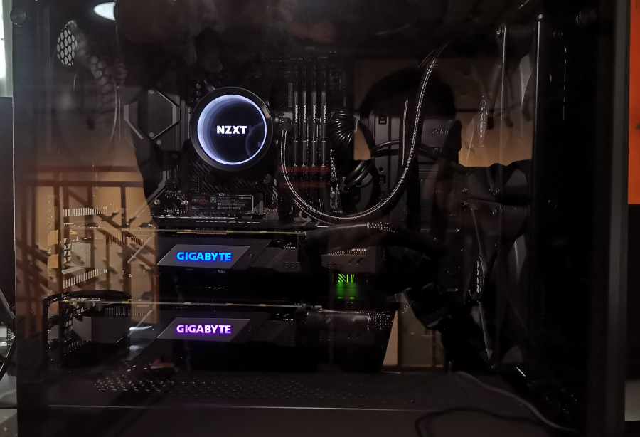
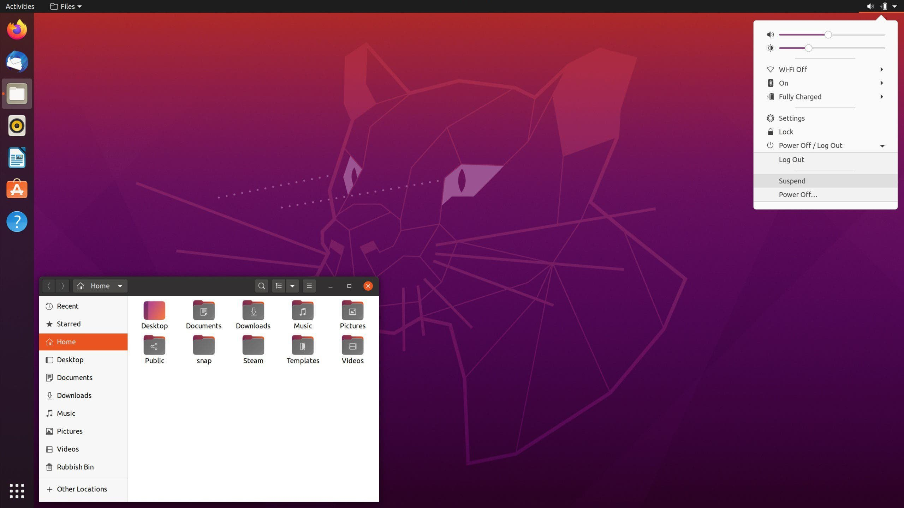
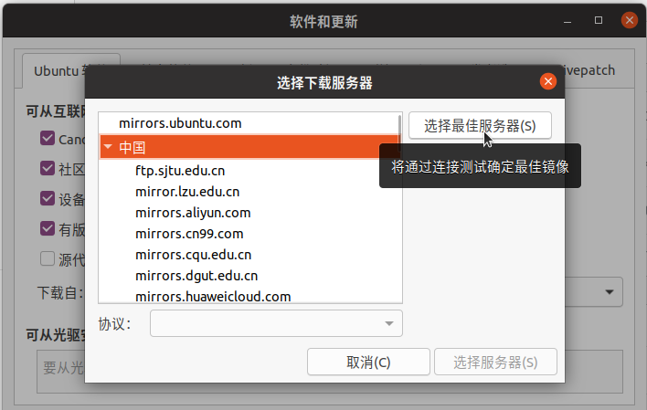
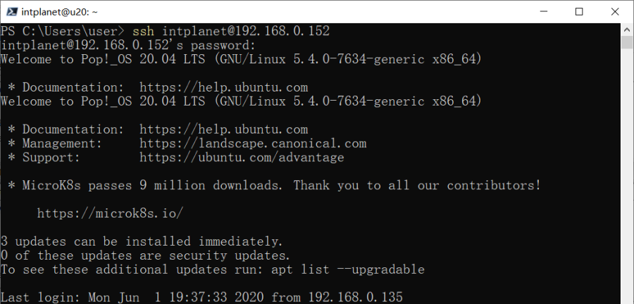
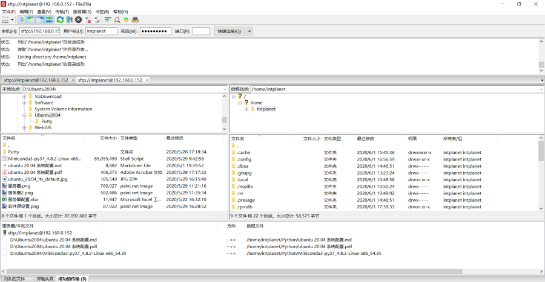
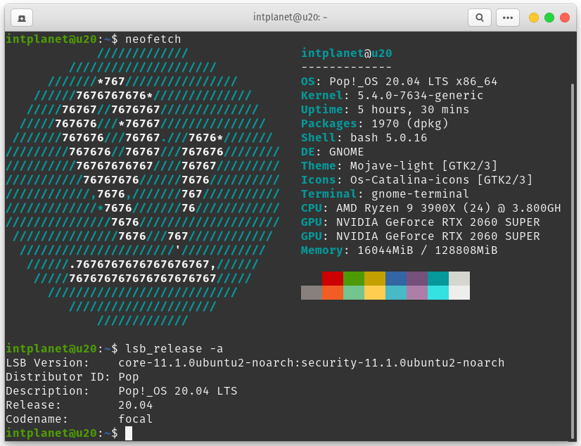

【创世】鸡冻！方圆五百米最强诞生了！¶
今天是一个鸡冻人心的时刻，魔方解译星球团队拥有了第一台高性能服务器，据说是方圆五百米最强...

一个男人的故事¶
魔方本有一台 NAS，虽说性能还可以，但用来托管 Web 站点还算可以，对于动辄十几 Gb 的遥感影像服务项目则显得捉襟见肘。所以解译星球最（自）帅（恋）的男（屌）人（丝）烽火连城地配置了一台自称方圆五百米无敌的高性能服务器。少说废话，配置如下：
- CPU：AMD，3900X * 1；
- 主板：华硕，TUF GAMING x570-PLUS WIFI * 1
- 内存：金士顿，骇客神条DDR4 2666 32gb * 4；骇客神条DDR4 2666 16gb * 1
- 显卡：技嘉，RTX2060 super GAMING OC超频 * 2
- SSD：三星，970EVO PLUS 1TB * 1
- 水冷：恩杰，x63 280水冷 * 1
- 风扇：利民，TL-C12 12CM风扇 * 3
- 电源：美商海盗船，额定1000w RM1000X * 1
- 机箱：追风者，P400 AIR * 1
尴尬的装机时刻¶
本以为最帅的男人习得秒装机的逆颜值神技，结果花瓶里的水还是有点多，装主板竟没找到螺丝，跪了，跪了！！！
尴尬时刻，装机师傅来解围，一小时轻松搞定，点赞！
终于来到了秀机时刻，请忽略上帝之影和小伙伴们的手动灯光！

Linux，必须滴¶
硬件组装好了，接下来就是软件配置，首当其冲的是操作系统。由于是做服务器使用，所以上 Linux 是必须滴。CentOS 是服务器领域的佼佼者，Manjaro 是桌面领域的新秀，但为了兼顾服务器和算力输出，我们最开始折中选择了对服务器和桌面应用都较为友好的 Ubuntu，正好 Ubuntu 20.04 LTS 发布不久，就用它来练手了。
访问：http://releases.ubuntu.com/focal/，下载安装镜像：http://releases.ubuntu.com/focal/ubuntu-20.04-desktop-amd64.iso，校验通过后U盘烧录安装即可。安装过程无需多言，度娘一搜一大把（别问我是谁，请叫我雷锋），重点说一下两处大坑和一处小坑：
- 大坑一，安装过程中断网，否则 Ubuntu 会自动下载更新，这已是 Ubuntu 发行版的老毛病了，老司机免疫；
- 大坑二，Ubuntu 不自带独立显卡驱动，因此若无集成显卡（我们只有独显，成功躺枪），系统安装完成后界面无法正常显示。填坑方式是把系统所在硬盘取下来插在具有集显的笔记有本上，进入 Ubuntu 系统后装上 NVIDIA 私有独显驱动，然后再把硬盘放回去，这样就可以正常启动了。
- 小坑一：驱动打上以后，小伙伴误将显示器信号线插在主板接口上，结果系统 BOIS 都进不了。关键时刻，最帅的男人光速定位问题，秒填坑。
终于来到了秀桌面的时刻，还是曾经那个 Ubuntu, 没有一丝丝改变！

常用软件装起来¶
软件源更改¶
安装软件之前先把软件源更改成国内源，否则下载软件很可能龟速。国内速度较快的源有阿里、华为、网易、清华、中科大等，任君选择。如果有选择困难症，可以点击 选择最佳服务器，系统测试源的速度并选择最快源。

更新系统¶
Ubuntu 20.04 LTS 发行有一段时间了，有些针对系统维护的更新，命令如下：
sudo apt-get update && sudo apt-get upgrade
删除无用软件¶
Ubuntu 桌面版操作系统默认自带一些对于服务器而言无用的软件，直接删除即可，命令如下：
# 删除卡顿的Libreoffice
sudo apt-get remove libreoffice-common -y
# 删掉基本不用的自带软件
sudo apt-get remove thunderbird totem rhythmbox empathy brasero simple-scan gnome-mahjongg aisleriot gnome-mines cheese transmission-common gnome-orca webbrowser-app gnome-sudoku landscape-client-ui-install onboard deja-dup
安装实用软件¶
# 多媒体解码器
sudo apt install ubuntu-restricted-extras -y
# 中文输入法支持
sudo apt install fcitx -y
# 高级设置工具
sudo apt-get install gnome-tweak-tool -y
# 新立得软件包管理器，也可在软件中心搜索安装
sudo apt-get install synaptic -y
# 上古神器Vim、zsh、git
sudo apt-get install vim zsh git -y
# 终端文件管理器
sudo apt-get install ranger -y
# 终端系统信息工具
sudo apt-get install lsb-core neofetch -y
系统配置不含糊¶
四步搞定root账号¶
第一步：设置root密码¶
以普通用户登录系统，创建root用户的密码。在终端输入命令：
sudo passwd root
然后输入设置的密码，输入两次，这样就完成了设置root用户密码了
第二步：修改登录限制¶
修改文件登录界面配置文件：
sudo gedit /usr/share/lightdm/lightdm.conf.d/50-ubuntu.conf
在文件末尾增加如下两行：
greeter-show-manual-login=true
all-guest=false
第三步：修改窗口控制文件¶
修改 /etc/pam.d/gdm-autologin 和 /etc/pam.d/gdm-password 两个文件：
sudo gedit /etc/pam.d/gdm-autologin
注释掉 auth required pam_succeed_if.so user != root quiet_success 这一行，一般是第三行。
sudo gedit /etc/pam.d/gdm-password
注释掉 auth required pam_succeed_if.so user != root quiet_success 这一行，一般是第三行。
第四步：修改root配置文件¶
输入如下命令打开root配置文件：
sudo gedit /root/.profile
将文件末尾的 mesg n 2> /dev/null || true 这一行修改成 tty -s&&mesg n || true。
SSH 配置¶
SSH 为 Secure SHell 的缩写，是建立在网络应用层基础上的安全协议。SSH 专为远程登录会话和其他网络服务提供安全性可靠连接的协议。利用 SSH 协议可以有效防止远程管理过程中的信息泄露问题。配置好 SSH 是服务器运维最基本的需求。
安装与启动SSH¶
Ubuntu 默认并没有安装 SSH 服务，如果通过 SSH 远程连接到 Ubuntu，需要自己手动安装 ssh-client 和 ssh-server：
sudo apt-get install openssh-client openssh-server -y
安装完成以后，可启动、停止或重启服务：
sudo /etc/init.d/ssh start # 启动
sudo /etc/init.d/ssh stop # 停止
sudo /etc/init.d/ssh resart # 重启
启动后，可以通过 grep 命令查看 SSH 是否处于正常运行状态：
ps -e | grep ssh
输出如下：
$ ps -e|grep ssh
2151 ? 00:00:00 ssh-agent
5313 ? 00:00:00 sshd
ssh-agent 表示 ssh-client 正常运行，sshd 表示 ssh-server 正常启动。
端口配置¶
SSH 服务默认的端口是 22，可以更改端口，使用如下命令打开 SSH 配置文件：
sudo gedit /etc/ssh/sshd_config
配置文件内容如下：
# Package generated configuration file
# See the sshd(8) manpage for details
# What ports, IPs and protocols we listen for
Port 22 # 默认，业务端口正常后再关闭
Port 4000 # 业务端口
# Package generated configuration file
# See the sshd(8) manpage for details
# What ports, IPs and protocols we listen for
修改端口（Port）后，重启 SSH 服务即可生效。
登录 SSH 服务¶
SSH 服务启动后，即可使用用户名和密码登陆，登陆命令格式为：ssh user@IP。例如：
ssh intplanet@192.168.0.152
根据提示输入 intplanet 的密码，即可远程登陆。exit 命令退出远程登陆。演示如下图所示：

此外，也可以通过 FTP 软件进行连接，方便文件交换。

防火墙配置¶
服务器防火墙必备，Ubuntu 下可用 ufw（ubuntu fire wall），常用命令如下：
intplanet@u20:~$ ufw allow OpenSSH # 允许 SSH
intplanet@u20:~$ ufw allow in "Apache Full" # 允许 Apache
intplanet@u20:~$ sudo ufw app list # 查看网络程序白名单
[sudo] intplanet 的密码：
可用应用程序：
CUPS
OpenSSH
intplanet@u20:~$ ufw enable # 开启防火墙，需允许 SSH，否则远程无法连接
用户配置¶
新建用户¶
新建用户使用 useradd 命令实现，常用参数如下：
intplanet@u20:~$ useradd --help
用法：useradd [选项] 登录名
useradd -D
useradd -D [选项]
选项：
--badnames do not check for bad names
-b, --base-dir BASE_DIR 新账户的主目录的基目录
--btrfs-subvolume-home use BTRFS subvolume for home directory
-c, --comment COMMENT 新账户的 GECOS 字段
-d, --home-dir HOME_DIR 新账户的主目录
-D, --defaults 显示或更改默认的 useradd 配置
-e, --expiredate EXPIRE_DATE 新账户的过期日期
-f, --inactive INACTIVE 新账户的密码不活动期
-g, --gid GROUP 新账户主组的名称或 ID
-G, --groups GROUPS 新账户的附加组列表
-h, --help 显示此帮助信息并退出
-k, --skel SKEL_DIR 使用此目录作为骨架目录
-K, --key KEY=VALUE 不使用 /etc/login.defs 中的默认值
-l, --no-log-init 不要将此用户添加到最近登录和登录失败数据库
-m, --create-home 创建用户的主目录
-M, --no-create-home 不创建用户的主目录
-N, --no-user-group 不创建同名的组
-o, --non-unique 允许使用重复的 UID 创建用户
-p, --password PASSWORD 加密后的新账户密码
-r, --system 创建一个系统账户
-R, --root CHROOT_DIR chroot 到的目录
-P, --prefix PREFIX_DIR prefix directory where are located the /etc/* files
-s, --shell SHELL 新账户的登录 shell
-u, --uid UID 新账户的用户 ID
-U, --user-group 创建与用户同名的组
-Z, --selinux-user SEUSER 为 SELinux 用户映射使用指定 SEUSER
--extrausers Use the extra users database
用户配置¶
新建用户后，修改用户配置（如增加用户组、修改主目录、修改默认 shell 等），常用参数如下：
intplanet@u20:~$ usermod --help
用法：usermod [选项] 登录名
选项：
-b, --badnames allow bad names
-c, --comment COMMENT GECOS 字段的新值
-d, --home HOME_DIR 用户的新主目录
-e, --expiredate EXPIRE_DATE 设定帐户过期的日期为 EXPIRE_DATE
-f, --inactive INACTIVE 过期 INACTIVE 天数后，设定密码为失效状态
-g, --gid GROUP 强制使用 GROUP 为新主组
-G, --groups GROUPS 新的附加组列表 GROUPS
-a, --append GROUP 将用户追加至上边 -G 中提到的附加组中，
并不从其它组中删除此用户
-h, --help 显示此帮助信息并退出
-l, --login NEW_LOGIN 新的登录名称
-L, --lock 锁定用户帐号
-m, --move-home 将家目录内容移至新位置 (仅于 -d 一起使用)
-o, --non-unique 允许使用重复的(非唯一的) UID
-p, --password PASSWORD 将加密过的密码 (PASSWORD) 设为新密码
-R, --root CHROOT_DIR chroot 到的目录
-P, --prefix PREFIX_DIR prefix directory where are located the /etc/* files
-s, --shell SHELL 该用户帐号的新登录 shell
-u, --uid UID 用户帐号的新 UID
-U, --unlock 解锁用户帐号
-v, --add-subuids FIRST-LAST 添加子 UID 范围
-V, --del-subuids FIRST-LAST 移除子 UID 范围
-w, --add-subgids FIRST-LAST 添加子 GID 范围
-W, --del-subgids FIRST-LAST 移除子 GID 范围
-Z, --selinux-user SEUSER 用户的新的 SELinux 用户映射
用户与用户组管理¶
其他用于用户和用户组管理的命令有下面几个：
userdel -r username # 删除用户及其主目录
id username # 查看用户身份 or
finger username # 需安装 finger
whoami # 查看当前用户
cat /etc/passwd # 查看所有用户
cat /etc/group # 查看所有用户组
cat /etc/shadow # 查看所有用户密码
groupadd gpname # 新建用户组
groupmod gpname # 调整用户组参数
groupdel gpname # 删除用户组
gpasswd gpname # 创建用户组管理员，亦可以进行删除与增加
members gpname # 查看用户组成员
结束语¶
哪有啥结束语！终于来到了秀终端的时刻，还是曾经那个 neofetch，还是曾经那个 lsb_release，但这一次是方圆五百米最强！！！加上 OS X 高仿主题与图标，一句话：高端大气上档次，低调奢华有内涵。

备注：由 @Spacefan 整理发布
更新：20200601 21:10